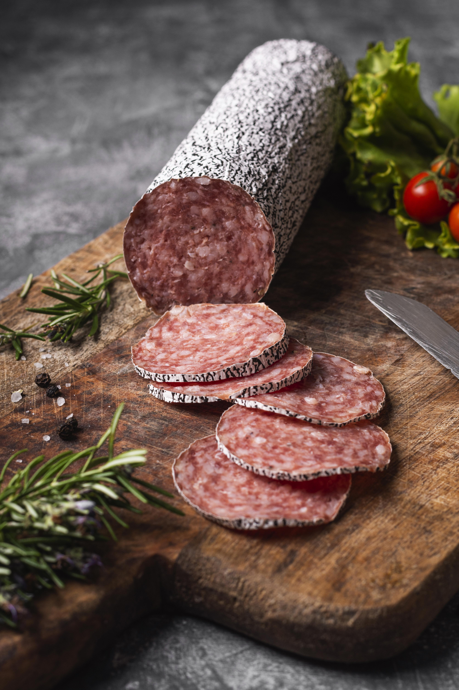

Колбасoff
Ресторан имени Данилы Колбасенко
Ресторан, где мясо — главный герой. Авторский подход к традициям, лучшие сорта мяса и уникальные рецепты от команды профессионалов.

О нас
Авторский подход
Собственные рецептуры, разработанные лично Данилой Колбасенко и его командой.
Отборное мясо
Только проверенные фермерские хозяйства и мраморные сорта мяса.
Идеальные пары
Собственная винотека и авторские настойки к каждому блюду.
Меню
Бронирование столика
Забронируйте стол
14:00–23:00 ежедневно
До 6 гостей онлайн
Подтверждение за 15 минут. +7 (4012) 288-88-55
Команда
Виктория Колбасенко
Шеф-повар, основатель
Коллекционирует рецепты колбас по всему миру. Стаж работы — 18 лет.
Виолетта Колбасенко
Шеф-технолог
Отвечает за качество и разработку новых позиций. Мастер своего дела.
Илья Колбасенко
Шеф-гриль
Знает об огне всё. Отвечает за мясо на углях и открытом огне.
Максим Колбасенко
Сомелье
Собирает идеальные пары вина к мясным блюдам. 12 лет опыта в гастрономии.
Отзывы
20 февраля 2026
Невероятная колбаса по-даниловски! Никогда не пробовала ничего подобного. Обслуживание на высоте, атмосфера потрясающая. Обязательно вернёмся!
18 февраля 2026
Рулька — это просто шедевр! Мясо тает во рту, соусы идеальные. Вино подобрали потрясающее. Лучший ресторан для мясоедов!
15 февраля 2026
Сало в шоколаде — это что-то невероятное! Сначала сомневалась, но теперь это мой любимый десерт. Колбаски тоже отличные.
Контакты
Адрес
г. Калининград, ул. Мореходная, 3
Часы работы
Пн-Вс: 14:00 — 23:00
Телефон
+7 (4012) 288-88-55
Email
kolbacoff@hotmail.com